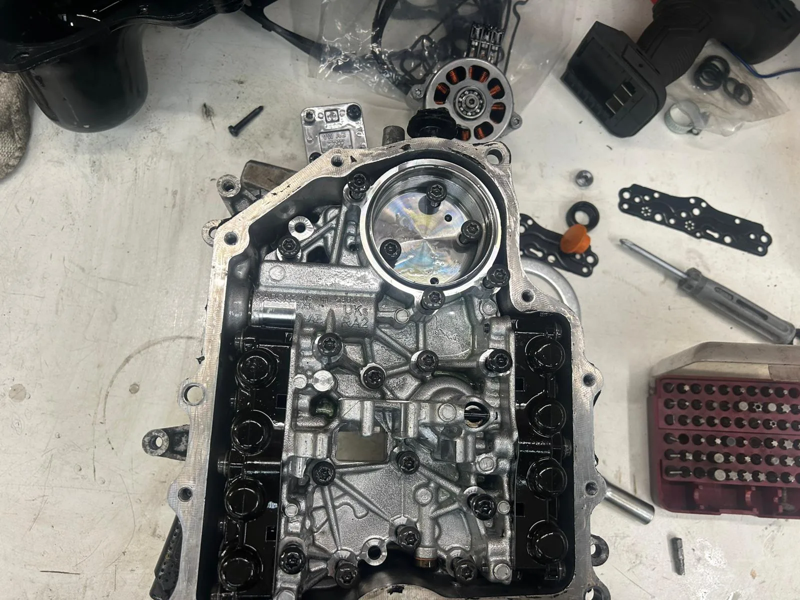
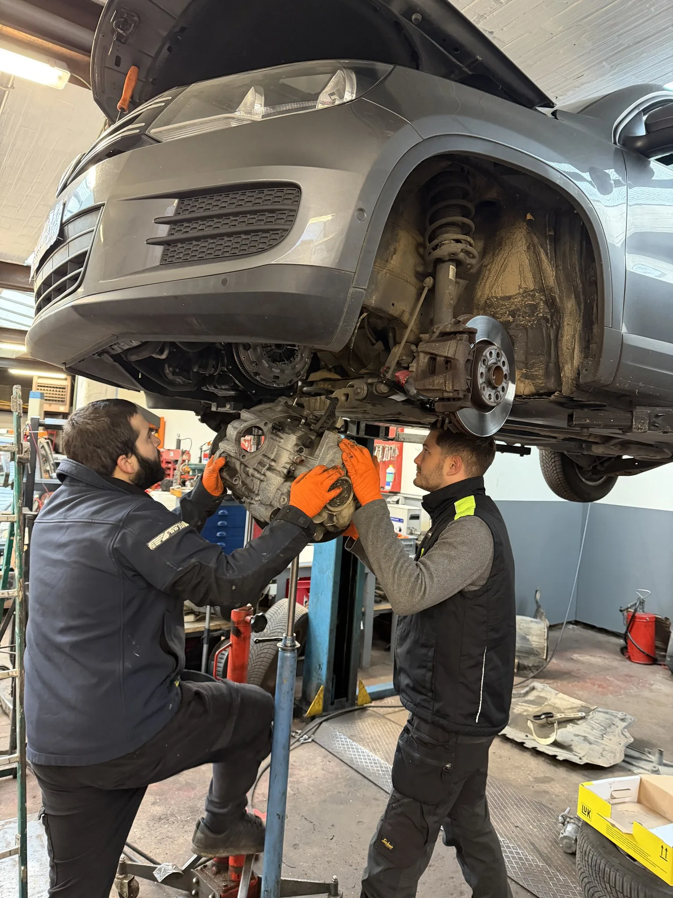

Votre DSG fait des à-coups ? Voyant de boîte allumé ? Mode dégradé ? Chez DMT AUTOGROUP, on est spécialiste réparation mécatronique DSG. On intervient sur les DQ200, DQ250, DQ380, DQ381 et DQ500. Pièces de qualité OEM. Réparation mécatronique à partir de 699€ HTVA. Schakelt uw DSG schokkerig? Waarschuwingslampje aan? Noodmodus? Bij DMT AUTOGROUP zijn we specialist in DSG mechatronica herstelling. We werken op DQ200, DQ250, DQ380, DQ381 en DQ500. OEM-kwaliteit onderdelen. Mechatronica reparatie vanaf 699€ excl. BTW.
La mécatronique, c'est le cerveau de votre boîte DSG. Quand elle tombe en panne, vous le sentez immédiatement : à-coups violents, voyant de boîte qui clignote, mode dégradé, parfois la voiture refuse de bouger. Chez le concessionnaire, on vous annonce direct un remplacement complet — 3500 à 5000 euros, parfois plus. De mechatronica is het brein van uw DSG-versnellingsbak. Wanneer die uitvalt, merkt u het meteen: hevige schokken, knipperend waarschuwingslampje, noodmodus, soms weigert de auto te bewegen. Bij de concessie vertellen ze u meteen dat het volledig vervangen moet — 3500 tot 5000 euro, soms meer.
Notre approche est différente. On ouvre le module, on identifie les composants défaillants, et on remplace uniquement ce qui est cassé. Solénoïdes, capteurs, accumulateur, joints — tout en pièces de qualité OEM, les mêmes que dans les modules neufs. Pas du générique. Onze aanpak is anders. We openen de module, identificeren de defecte onderdelen en vervangen alleen wat kapot is. Solenoïden, sensoren, accumulator, afdichtingen — alles in OEM-kwaliteit, dezelfde als in nieuwe modules. Geen generieke rommel.
Résultat : une réparation à partir de 699€ HTVA au lieu de 3500-5000€ chez le concessionnaire. Même fiabilité, budget divisé par deux. Et si le module est trop endommagé pour être réparé, on vous le dit franchement — on ne force jamais une réparation quand le remplacement est la meilleure option. Resultaat: een reparatie vanaf 699€ excl. BTW in plaats van 3500-5000€ bij de concessie. Dezelfde betrouwbaarheid, budget gehalveerd. En als de module te zwaar beschadigd is om te repareren, zeggen we dat eerlijk — we forceren nooit een reparatie als vervanging de betere optie is.

Chaque boîte DSG a ses particularités. Ce qui casse sur une DQ200, c'est pas la même chose que sur une DQ500. On ne répare pas une Golf 1.4 TSI comme un Transporter T6. C'est pour ça qu'on a développé une vraie spécialisation sur chaque modèle. Elke DSG-versnellingsbak heeft zijn eigen eigenaardigheden. Wat kapotgaat op een DQ200 is niet hetzelfde als op een DQ500. We herstellen een Golf 1.4 TSI niet zoals een Transporter T6. Daarom hebben we een echte specialisatie ontwikkeld voor elk model.
DQ200 — La 7 vitesses à embrayage sec. On la trouve dans les Golf, Polo, A3, Leon, Octavia avec des moteurs 1.0 à 1.5 TSI. C'est la DSG la plus répandue en Belgique, et aussi la plus problématique. L'accumulateur de pression qui lâche, les solénoïdes qui bloquent, le faisceau interne qui se fissure — on connaît chaque point faible. Le code P17BF, on le voit toutes les semaines. DQ200 — De 7-versnellingen met droge koppeling. Zit in de Golf, Polo, A3, Leon, Octavia met 1.0 tot 1.5 TSI motoren. Het is de meest verspreide DSG in België, en ook de meest problematische. De drukaccumulator die het begeeft, solenoïden die blokkeren, de interne kabelharnas die scheurt — we kennen elk zwak punt. De foutcode P17BF zien we elke week.
DQ250 — La 6 vitesses à embrayage humide. Golf GTI, Audi A3 2.0 TFSI, Passat, Octavia vRS. Plus robuste que la DQ200, mais pas indestructible. Après 100 000 km sans vidange de boîte, les solénoïdes s'usent et les passages deviennent durs. On voit beaucoup de GTI Mk5 et Mk6 avec ce souci. DQ250 — De 6-versnellingen met natte koppeling. Golf GTI, Audi A3 2.0 TFSI, Passat, Octavia vRS. Robuuster dan de DQ200, maar niet onverwoestbaar. Na 100 000 km zonder versnellingsbak-olieverversing slijten de solenoïden en worden de schakelingen hard. We zien veel GTI Mk5 en Mk6 met dit probleem.
DQ380 / DQ381 — Les 7 vitesses à embrayage humide nouvelle génération. Golf R Mk7/Mk8, Audi S3, CUPRA Leon, Tiguan 2.0 TSI. Plus fiables, mieux refroidies. Mais quand le module mécatronique déconne, le concessionnaire facture toujours aussi cher. On intervient dessus au même tarif. DQ380 / DQ381 — De 7-versnellingen met natte koppeling van de nieuwe generatie. Golf R Mk7/Mk8, Audi S3, CUPRA Leon, Tiguan 2.0 TSI. Betrouwbaarder, beter gekoeld. Maar als de mechatronica-module uitvalt, factureert de concessie nog altijd evenveel. Wij werken eraan voor hetzelfde tarief.
DQ500 — La grosse. 7 vitesses, embrayage humide, conçue pour le couple élevé. Audi RS3, TTRS, Transporter T6, Amarok. Les Transporter T6, c'est un cas particulier — ces camionnettes bossent dur, portent des charges lourdes, et la mécatronique prend cher. On voit régulièrement des factures de 4000-5000€ chez VW pour un T6. Chez nous, c'est une autre histoire. DQ500 — De grote. 7 versnellingen, natte koppeling, ontworpen voor hoog koppel. Audi RS3, TTRS, Transporter T6, Amarok. De Transporter T6 is een speciaal geval — die bestelwagens werken hard, dragen zware ladingen, en de mechatronica betaalt het gelag. We zien regelmatig facturen van 4000-5000€ bij VW voor een T6. Bij ons is dat een ander verhaal.

Quand un client nous appelle pour un problème de DSG, c'est souvent la même chose. Le voyant PRNDS clignote sur le tableau de bord. La voiture a des à-coups entre la 1ère et la 2ème. Elle tremble au démarrage. Elle refuse de passer la marche arrière. Ou pire : mode dégradé, bloquée en 2ème vitesse en plein trafic. Als een klant ons belt voor een DSG-probleem, is het vaak hetzelfde verhaal. Het PRNDS-lampje knippert op het dashboard. De auto schokt tussen de 1ste en 2de versnelling. Ze trilt bij het optrekken. Ze weigert achteruit te schakelen. Of erger: noodmodus, geblokkeerd in de 2de versnelling midden in het verkeer.
On a aussi les cas plus subtils. La boîte qui "hésite" 2-3 secondes avant d'engager un rapport après un arrêt au feu rouge. Un bruit de claquement sec quand vous passez de P à D. La voiture qui ne démarre plus du tout le matin — l'accumulateur de pression est vide. We hebben ook de subtielere gevallen. De bak die 2-3 seconden "aarzelt" voordat ze schakelt na een stop bij het verkeerslicht. Een droog klappend geluid als u van P naar D schakelt. De auto die 's ochtends helemaal niet meer start — de drukaccumulator is leeg.
Chaque symptôme raconte quelque chose. Et quand on voit le code erreur qui va avec — P17BF, P189C, P0841 — on sait déjà dans quelle direction chercher. C'est l'avantage de travailler sur des DSG tous les jours. Elk symptoom vertelt iets. En wanneer we de bijbehorende foutcode zien — P17BF, P189C, P0841 — weten we al in welke richting we moeten zoeken. Dat is het voordeel van elke dag aan DSG's te werken.
On ne met pas n'importe quoi dans une mécatronique DSG. Les solénoïdes qu'on installe sont les mêmes que Volkswagen utilise dans les modules neufs — fabrication Bosch. Les capteurs, les joints, l'accumulateur — tout est en qualité d'origine. We stoppen niet zomaar iets in een DSG mechatronica. De solenoïden die we installeren zijn dezelfde als Volkswagen gebruikt in nieuwe modules — Bosch-fabricaat. De sensoren, afdichtingen, de accumulator — alles in originele kwaliteit.
La différence entre une réparation qui tient 2 mois et une qui tient 5 ans, c'est la qualité des pièces. On a fait le choix de ne travailler qu'avec de l'OEM. Ça coûte un peu plus que du générique chinois, mais la réparation tient. Point. Het verschil tussen een reparatie die 2 maanden houdt en eentje die 5 jaar meegaat, is de kwaliteit van de onderdelen. We hebben ervoor gekozen om alleen met OEM te werken. Dat kost iets meer dan generiek Chinees materiaal, maar de reparatie houdt stand. Punt.
Volkswagen recommande une vidange DSG tous les 60 000 km. Pourtant, on voit des voitures arriver avec 120 000 km et pas une goutte changée. Le propriétaire n'était même pas au courant. L'ancien garage n'a "rien dit". Volkswagen raadt een DSG-olieverversing aan om de 60 000 km. Toch zien we auto's binnenkomen met 120 000 km en geen druppel vervangen. De eigenaar wist het niet eens. De vorige garage had "niets gezegd".
Résultat : l'huile est noire, les à-coups commencent, et la mécatronique s'use deux fois plus vite. Une vidange DSG, c'est la base pour éviter les réparations à 2000 euros. On la fait chez nous avec l'huile spécifique à chaque modèle — chaque boîte a ses spécifications. Une DQ250 ne prend pas la même huile qu'une DQ200. Resultaat: de olie is zwart, de schokken beginnen, en de mechatronica slijt twee keer zo snel. Een DSG-olieverversing is de basis om reparaties van 2000 euro te vermijden. We doen het bij ons met de specifieke olie voor elk model — elke bak heeft zijn eigen specificaties. Een DQ250 gebruikt niet dezelfde olie als een DQ200.
Si votre DSG n'a jamais été vidangée, il n'est pas trop tard. Mais n'attendez pas un an de plus. Pensez aussi à votre vidange moteur — on peut tout combiner en une seule visite. Als uw DSG nog nooit een olieverversing gehad heeft, is het niet te laat. Maar wacht geen jaar meer. Denk ook aan uw motorolie verversen — we kunnen alles combineren in één bezoek.
La DSG a deux embrayages. Un pour les rapports pairs, un pour les impairs. Quand ils s'usent, ça patine. Le moteur monte dans les tours sans que la voiture accélère. Vous sentez des tremblements au démarrage. Un bruit sec quand vous passez de P à D. De DSG heeft twee koppelingen. Eén voor de even versnellingen, één voor de oneven. Als ze slijten, slipt het. De motor draait hoog zonder dat de auto optrekt. U voelt trillingen bij het wegrijden. Een droog geluid als u van P naar D schakelt.
Sur une DQ200 (embrayage sec), c'est courant autour de 100 000-150 000 km, parfois plus tôt en ville avec beaucoup de stop-and-go. Sur une DQ250 ou DQ500 (embrayage humide), ça tient plus longtemps — mais quand ça lâche, c'est plus cher à remplacer. Op een DQ200 (droge koppeling) is het gebruikelijk rond 100 000-150 000 km, soms eerder in de stad met veel stop-and-go. Op een DQ250 of DQ500 (natte koppeling) gaat het langer mee — maar als het begeeft, is het duurder om te vervangen.
On remplace le kit complet — les deux disques, le mécanisme, la butée. Et on vérifie toujours le volant moteur bi-masse en même temps. Si vous avez aussi besoin de réparations mécaniques sur le moteur, on fait tout en une intervention. We vervangen het complete kit — beide schijven, het mechanisme, het druklager. En we controleren altijd het bi-massa vliegwiel tegelijk. Als u ook mechanische herstellingen aan de motor nodig heeft, doen we alles in één ingreep.
Avant de toucher à quoi que ce soit, on diagnostique. On utilise le même outillage que les concessionnaires VW et Audi. On lit les codes, on analyse les valeurs d'adaptation, on fait un essai routier. On ne devine pas — on sait. Voordat we iets aanraken, diagnosticeren we. We gebruiken dezelfde tools als de VW- en Audi-concessies. We lezen de codes uit, analyseren de adaptatiewaarden, maken een proefrit. We gokken niet — we weten het.
Parfois le diagnostic révèle un problème simple — un recalibrage suffit et vous repartez sans rien payer de plus. Parfois c'est plus sérieux. Dans les deux cas, vous avez un diagnostic clair avant de prendre une décision. Pour un diagnostic complet au-delà de la boîte, on peut tout vérifier dans la foulée. Soms onthult de diagnose een eenvoudig probleem — een herkalibratie volstaat en u vertrekt zonder extra kosten. Soms is het ernstiger. In beide gevallen heeft u een duidelijke diagnose voordat u een beslissing neemt. Voor een volledige diagnose buiten de versnellingsbak kunnen we alles meteen controleren.
Des à-coups entre les rapports, c'est le signe classique d'un souci DSG. Huile de boîte en fin de vie, mécatronique fatiguée, ou embrayage qui commence à patiner — on voit ça tous les jours. Un diagnostic chez nous prend 30 minutes. Réparation mécatronique à partir de 699€ HTVA. Schokken tussen de versnellingen is het klassieke teken van een DSG-probleem. Versnellingsbakolie op het einde van haar levensduur, vermoeide mechatronica, of koppeling die begint te slippen — we zien het elke dag. Een diagnose bij ons duurt 30 minuten. Mechatronica reparatie vanaf 699€ excl. BTW.
Toutes les DSG du groupe Volkswagen : DQ200, DQ250, DQ380, DQ381, DQ500. Que ce soit une Golf, un Tiguan, une Audi A3, un Seat Leon, une Skoda Octavia, un Transporter T6 ou une RS3 — on connaît ces boîtes. Alle DSG's van de Volkswagen-groep: DQ200, DQ250, DQ380, DQ381, DQ500. Of het nu een Golf, Tiguan, Audi A3, Seat Leon, Skoda Octavia, Transporter T6 of RS3 is — we kennen deze bakken.
Chez nous, ça démarre à 699€ HTVA avec des pièces OEM. Chez le concessionnaire, un remplacement complet c'est 3500-5000€. On répare le module au lieu de le jeter — même résultat, budget divisé par deux. Bij ons start het vanaf 699€ excl. BTW met OEM-onderdelen. Bij de concessie kost een volledige vervanging 3500-5000€. Wij repareren de module in plaats van hem weg te gooien — zelfde resultaat, budget gehalveerd.
Le mode dégradé, c'est la boîte qui se protège. 80% du temps c'est la mécatronique. Ne roulez pas longtemps comme ça, ça peut aggraver les dégâts. Appelez-nous — on vous dit tout de suite si c'est urgent. De noodmodus is de bak die zichzelf beschermt. In 80% van de gevallen is het de mechatronica. Rij er niet te lang mee, dat kan de schade verergeren. Bel ons — we vertellen u meteen of het dringend is.
On utilise des pièces de qualité OEM — les mêmes composants que dans les modules neufs. Pas du générique. C'est ce qui fait qu'une réparation chez nous tient dans le temps. We gebruiken OEM-kwaliteit onderdelen — dezelfde componenten als in nieuwe modules. Geen generiek spul. Dat is wat maakt dat een reparatie bij ons standhoud op lange termijn.
Réparation mécatronique DSG à partir de 699€ HTVA
Lundi — Vendredi · 08:30 — 18:00
Mechelsesteenweg 270, 1933 ZaventemDSG mechatronica reparatie vanaf 699€ excl. BTW
Maandag — Vrijdag · 08:30 — 18:00
Mechelsesteenweg 270, 1933 Zaventem